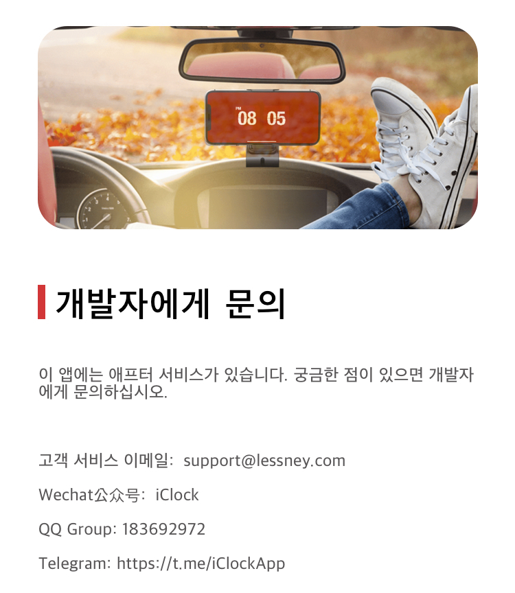
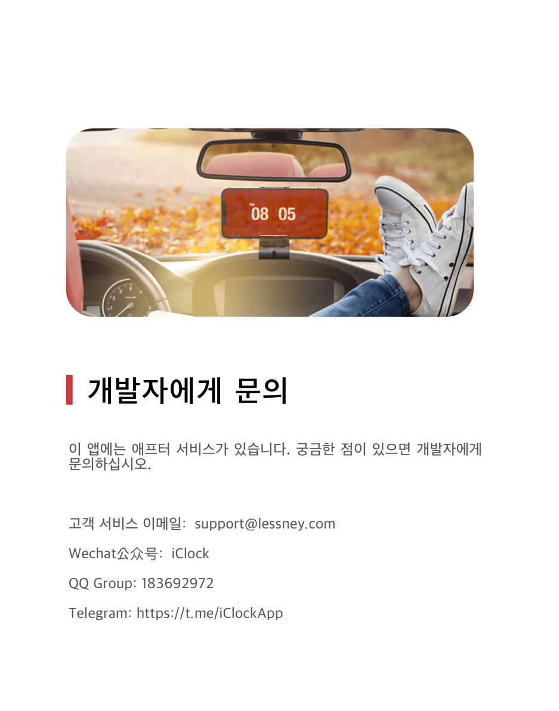

'트집'뒤집기 효과 숫자 시간 표시 시계와 미션 알람시을 충족시킬 수 있다.
디자인이 심플하고 깔끔하고 현대적이고 유창하다.색상 프로젝트를 사용자로 정의하고 손짓을 쉽게 전환할 수 있습니다.요즘은 집에 컴퓨터가 있기를 원하지 않고 아이패드나 아이폰을 디지털 시계로 치면 친환경과 완벽할 것이다.그것을 침대 가장자리나 탁자 위에 놓아 보니 괜찮은 것 같다.

Telegram
Twitter
Facebook
Developer
